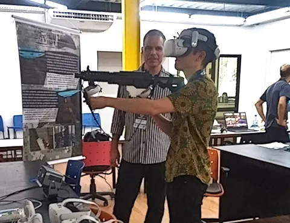
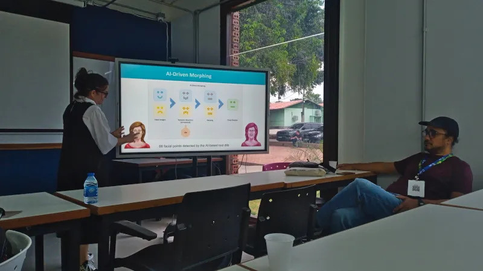
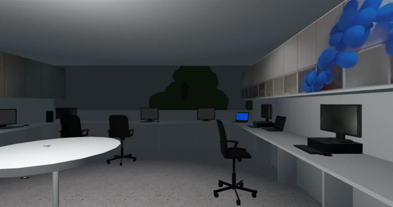
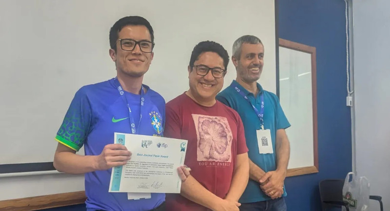

Callidus Academy building at the Amazonas State University (UEA), which hosted many of the paper presentations and workshops of IFIP-ICEC 2024. 03 oct 2024. Personal archives.
For the third year in a row, I had the privilege of participating in the IFIP International Conference on Entertainment Computing (IFIP-ICEC). The conference was held at the Amazonas State University (UEA) in Manaus, Brazil, along with co-located events related to virtual reality (SVR), image processing (Sibgrapi) and video game development (Sbgames). Over the course of four days, I had the opportunity to talk to video game developers and researchers from around the world and learn about the current problems, solutions and trends in the field.
In this post, I will discuss a small sample of the articles, workshops and tutorials presented at IFIP-ICEC, focusing on three aspects of digital entertainment that, in my opinion, stood out this year: content production using generative AI, the implementation of accessibility mechanisms in VR and the latest applications of VR in industry and job training. If you are curious to go beyond what is in this post, you can read several of the conference papers in full here.
P.S. This is a summary and a translation of the original, more lengthy post which is available on Medium (in Portuguese only).
VR for decision-making

Raphael de Souza e Almeida (left) and I playing the SVT20 target shooting training game. 02 oct 2024. Personal archives.
The use of VR experiences to help people try out products before purchasing, navigate complex situations, and acquire new job skills is a trend I first noticed at last year's IFIP-ICEC. This trend has continued to grow this year, showcasing new and exciting applications. Here are some examples:
- In one of the opening tutorials, Dr. Ingrid Winkler (Centro Universitário SENAI CIMATEC — Brazil) presented examples of the use of VR in the automotive industry, allowing automakers to capture the position of users' eyes during a virtual test drive, identifying which elements of the vehicle's interior attract the most attention.
- Raphael de Souza e Almeida (PUC-Rio) presented at the SVR two simulators currently in use by the Brazilian Navy: the SVETT, for terrain study and the SVT20, for decision-making training in stressful situations.
- In SVETT, you can fly over a geographical area using your avatar in virtual reality, view the terrain in 3D and draw lines on it collaboratively, allowing you to plan, for example, troop movements in war or civilian rescue scenarios.
- While SVETT is designed to encourage contemplative reflection, SVT20 focuses on quick decision-making. The experience consists of a target shooting training in which the player has just one second to decide whether the black-and-white silhouette that appears in front of them is a friend (for example, a person with their hands up) or foe (for example, a person pointing a revolver at them) and based on that decide whether to shoot (or not).
The pros and cons of AI-generated art

Dr. Maria Andreia Formico Rodrigues (Universidade de Fortaleza) explaining AI image transformation. 03 oct 2024. Personal archives.
Since the advent of generative AI, there has been much debate about whether these tools help or harm artists. While the presentations at IFIP-ICEC did not provide definitive answers, they sparked discussions and showcased positive examples of AI and humans collaborating to enhance media and video game art. Here is summary from what I have seen at SVR and IFIP-ICEC about this subject:
- One of the most interesting stages for this discussion was SVR, especially Pablo Bioni's keynote entitled AI Overview — Strategy and Applications on Digital Entertainment.
- During the keynote, Bioni shared his experiences working on visual effects projects for Brazilian companies such as TV Globo, one of the most influential TV and media companies in Brazil. He showed some examples of how he used generative AI models to, for example, extract an actress's voice from an old video and record new lines for her, allowing for a re-dub of the original.
- Bioni made it clear, however, that AIs often do not deliver the result imagined by the artist right away, and therefore manual retouching of the images using Photoshop and other editing tools was necessary. The training of specialized models using, for example, Llama, may also be necessary to obtain optimal results with certain image or video datasets.
- Another interesting example of the use of generative AI models to enhance existing video game art work can be seen in the paper Breast Cancer Diagnosis Through Serious Gaming: Clinical Reasoning, AI-Driven Character Morphing, and Emotional Engagement, by Rafael Barbosa and Dr. Maria Andreia Formico Rodrigues (University of Fortaleza).
- In the presentation of her paper, Dr. Rodrigues described how they generated a total of 240 facial expressions for the game's characters from 16 initial expressions drawn by an artist. To achieve this result, they applied techniques such as linear interpolation and Delaunay triangulation to move the characters' eyebrows and lips fluidly.
Obstacles towards implementing design for all

Screenshot of the game "Escape-INF-VR", developed by Angelo Coronado, Sergio Carvalho e Luciana Berretta (Universidade Federal de Goiás). Source: paper.
Just like last year, the topic of accessibility was addressed in several workshops and articles. However, in my opinion, this time the discussions were richer and more in-depth, mainly due to the greater participation of people with disabilities. Here is summary from what I have seen at Game Accessibility Research Summit and Student Game Competition about this subject:
- At the Game Accessibility Research Summit workshop, we had the opportunity to listen to and debate with Daniela Tavares (Universidade Federal Fluminense), a PhD student in Computing, visually impaired and dedicated to research on digital inclusion of people with visual impairments.
- During the group discussions at the workshop, Daniela explained some reasons behind the low adoption of accessibility mechanisms in games and applications in general. According to her, one of the main factors is the lack of representation of people with disabilities in leadership and decision-making positions in industry and academia.
- As a result, the topic of accessibility remains largely unexplored and faces political barriers within organizations. For example, even if a designer suggests an affordable implementation, if his or her boss does not think the implementation is relevant or cost-effective, it may end up being shelved.
- The topic of accessibility was also in the spotlight at the Student Game Competition held in conjunction with IFIP-ICEC. The competition organizers awarded an honorable mention to the game Escape-INF-VR: An Accessible VR Escape Game Proposal for Blind Individuals, developed by Angelo Coronado, Dr. Sergio Carvalho and Dr. Luciana Berretta (Federal University of Goiás).
- Through adaptations such as describing objects near the character via TTS (speech synthesis) and indicating the direction the character is facing (such as north, south, etc.), the researchers created an escape game that is accessible to both visually impaired and sighted people. It is an excellent example of inclusive design, or "design for all".
Final considerations

Receiving the Best Journal Paper award from the hands of Dr. Pablo Figueroa (center) e Dr. Angelo Di Iorio (right). 03 oct 2024. Personal archives.
Every end of conference, as every end of cycle, invites moments of reflection. This edition of ICEC marked the end of my master's degree, and I couldn't be happier with the results. The paper I presented, SyDRA: An Approach to Understanding Game Engine Architecture, based on my master's thesis, won the best paper award in the journal track. I am very happy for this recognition and for that I must thank my supervisors Dr. Yann-Gaël Guéhéneuc and Dr. Fabio Petrillo, and my colleagues Dr. Nicolas Anquetil and Dr. Cristiano Politowski for all their support and friendship over the past 2 years. The 2025 edition of IFIP-ICEC will be in Tokyo, Japan. See you there!